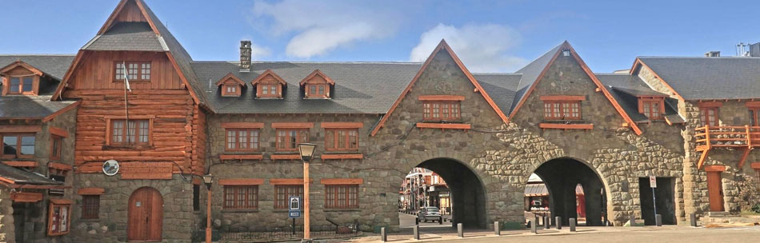
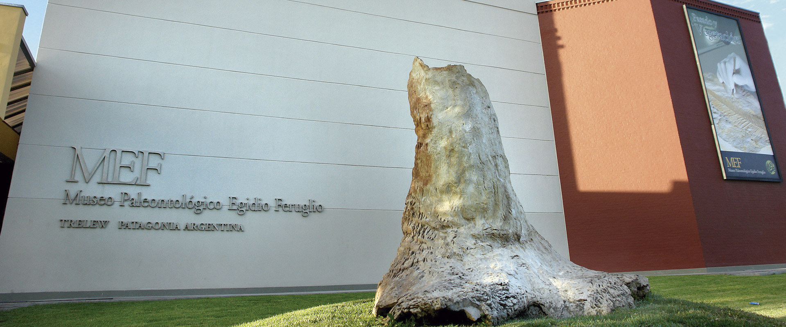
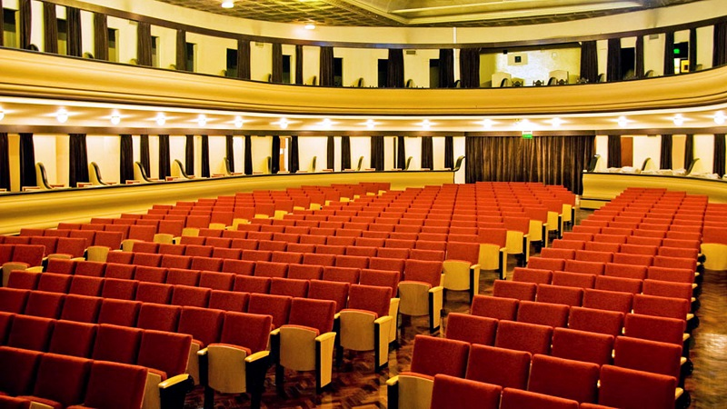
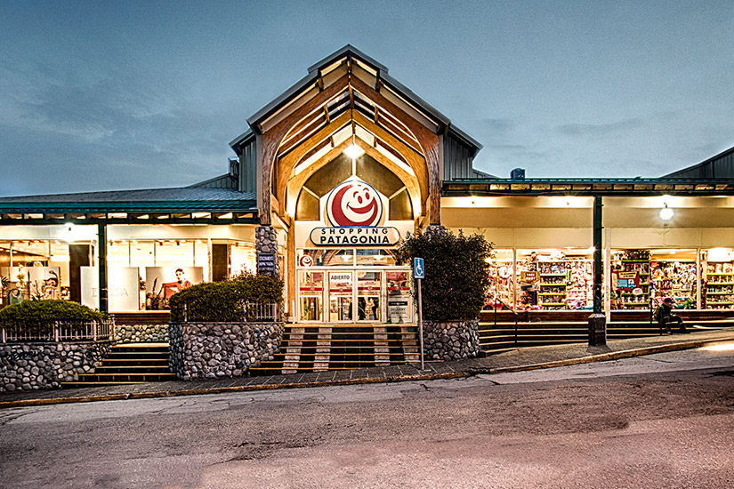

Actividades Bajo Techo
Museo Patagonia
El Museo de la Patagonia es una ventana al pasado y presente de esta vasta y diversa región. Alberga una rica colección de arte, arqueología, historia y etnografía que ilustra la vida y la cultura de los habitantes originales, así como la influencia de los colonizadores europeos. Los visitantes pueden explorar exposiciones que muestran desde arte rupestre hasta arte contemporáneo, y obtener una comprensión más profunda de la Patagonia en su contexto histórico y geográfico.
Museo Paleontológico
Este museo es un viaje en el tiempo a la prehistoria de la región. Aquí, los visitantes pueden explorar una colección excepcional de fósiles y restos de criaturas antiguas que habitaron la Patagonia hace millones de años. A través de exhibiciones interactivas e informativas, el museo revela la fascinante historia de la paleontología en la región y la importancia de estos hallazgos científicos.
Teatro Español
El Teatro Español de la Patagonia es un tesoro cultural que combina historia y espectáculos en un hermoso edificio centenario. Este teatro es un escenario para una variada programación que incluye obras de teatro, conciertos, danza y eventos culturales. Ofrece a los visitantes la oportunidad de disfrutar de actuaciones de alta calidad en un entorno arquitectónico impresionante, brindando una experiencia única de las artes escénicas en la Patagonia.
Shopping Patagonia
El Shopping Patagonia es un vibrante centro comercial ubicado en el corazón de la ciudad. Aquí, los visitantes pueden disfrutar de una amplia gama de tiendas, desde marcas de renombre internacional hasta artesanía local. Además de las compras, el centro comercial ofrece opciones gastronómicas, cines y espacios para entretenimiento, lo que lo convierte en un destino ideal para pasar el día y explorar la oferta comercial y cultural de la región.